Are you looking for places to eat on or near campus?
Well I have the places for you.
As a senior at UNCG, I have had plenty of time to survey the surrounding neighborhoods of UNCG and know the
best places to eat.
Some places may be a bit pricier than others but let me tell you, it'll be worth it.
Hopefully you like these places as much as I did and be sure to recommend your friends to this blog if you
did.
The Don
If you're looking for a place that has a variety of rice bowls, this is the place for you.
They don't only sell rice bowls but other Asain dishes like ramen.
They are open everyday except Sunday from 11-3:30pm and 5-10pm and on Saturday they are open 12-10pm.
They are located at 423 Tate St. Below are some personal recommendations.
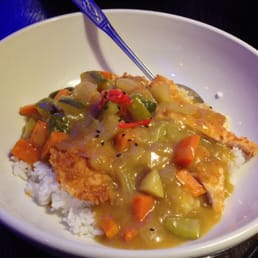
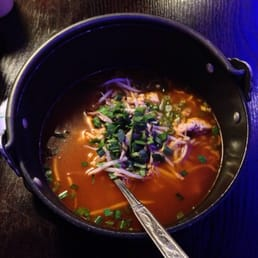
Happy Bowl
Happy Bowl is similar to the don where they also sell rice bowls but they also sell a variety of other
Asain cuisines.
They are located at 1201 W Gate City Blvd #102 and are open 11-9:30pm Monday-Friday, 12-9pm on Sunday
and 2-9pm on Saturday.
They do take flex at this location. Below are some personal recommendations.
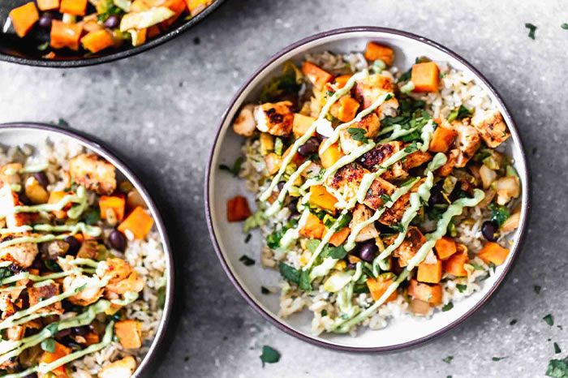
Don Gala Pizzaria
Don Gala Pizzaria is a pizza place that just opened this year.
Along with selling pizzas, they also sell wings and other assortments of Italian dining.
They are located right across the street from Happy Bowl at 1101 W Gate City Blvd #201.
They are open 1-10pm Monday-Thursday, 11:30-10pm Friday, 5-10pm Saturday and closed on Sunday.
Below are some personal recommendations.
 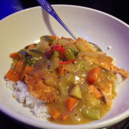
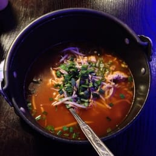
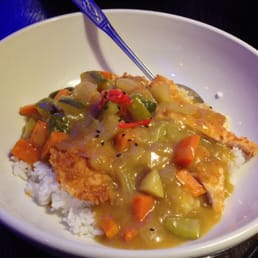
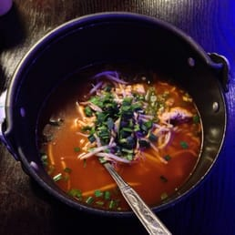
 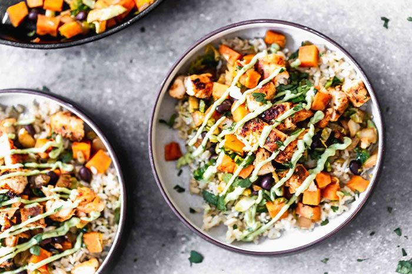
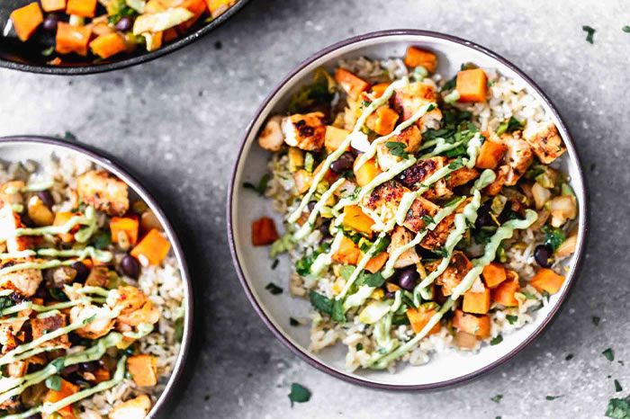

 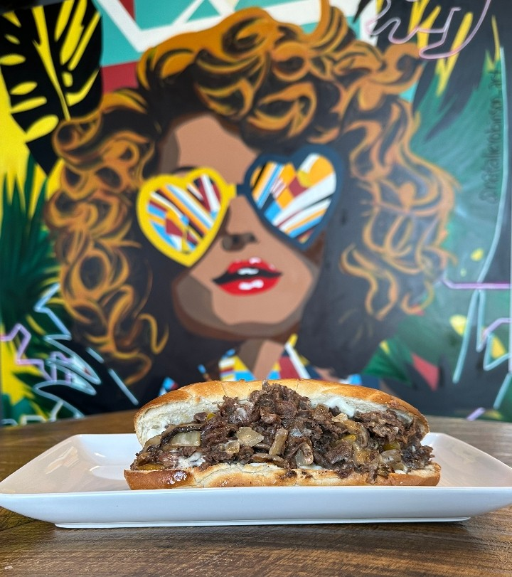
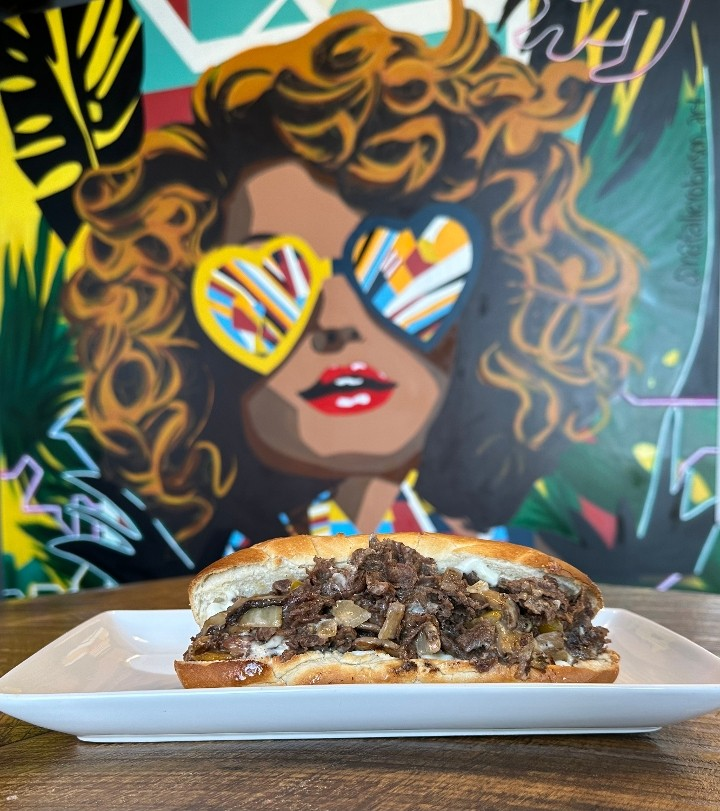